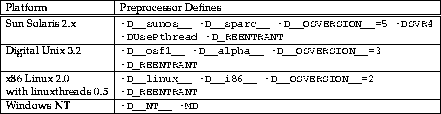

Obviously you need to include the omnithread.h header file in your source code, and link in the omnithread library with your executable. Because there is a single omnithread.h for all platforms, certain preprocessor defines must be given as compiler options. The easiest way to do this is to study the makefiles given in the examples provided with this distribution. If you are to include OMNI threads in your own development environment, these are the necessary preprocessor defines:
